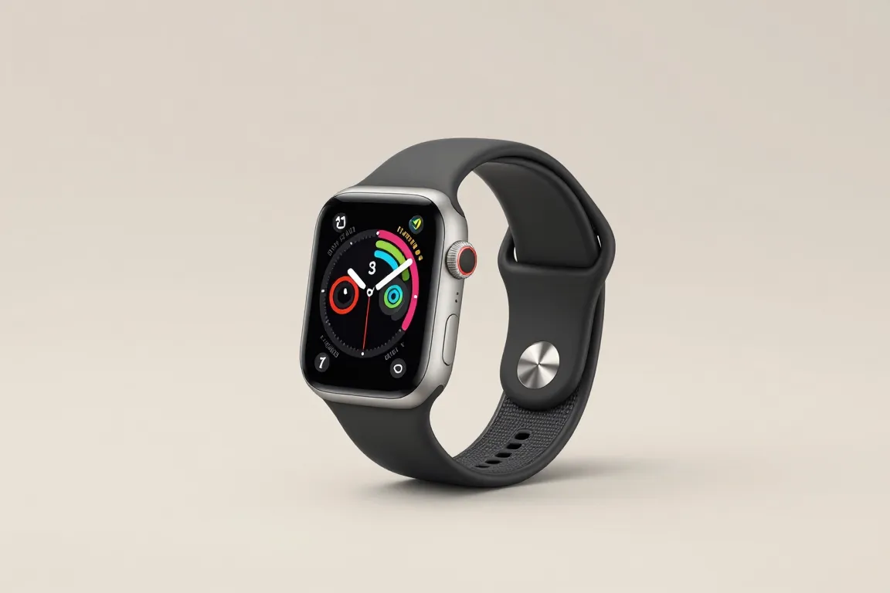

A watch that is a small touch screen computer. It has a rounded case in aluminium or steel, a glass screen, a digital crown and a soft strap. The Apple Watch of 2015 set the type.

Core thesis
A watch is the screen on the wrist. It shows the time, messages and health data. The user changes the face as often as a shirt.
Design principles
Cover the face with a glass touch screen that shows the time as a hands dial or as digits.
Make the case 38 to 49 mm tall and 9 to 12 mm thick, with rounded corners and a back that holds the sensors.
Add a digital crown and one or two buttons that scroll and select.
Let the user change the watch face and the strap, so that one case serves many looks.
Fit a quick-change strap with a slot, a pin or a lug in the case.
Fit sensors on the back for heart rate and blood oxygen, and show the results on the screen.
Make the case in aluminium for the base model and in steel, titanium or ceramic for the upper models.
Charge the watch each day or two on a magnetic puck.
Anti-patterns
A mechanical dial with printed hands
A thick plastic case with a small screen
A face that carries no data
A case with fixed lugs that does not take a strap change